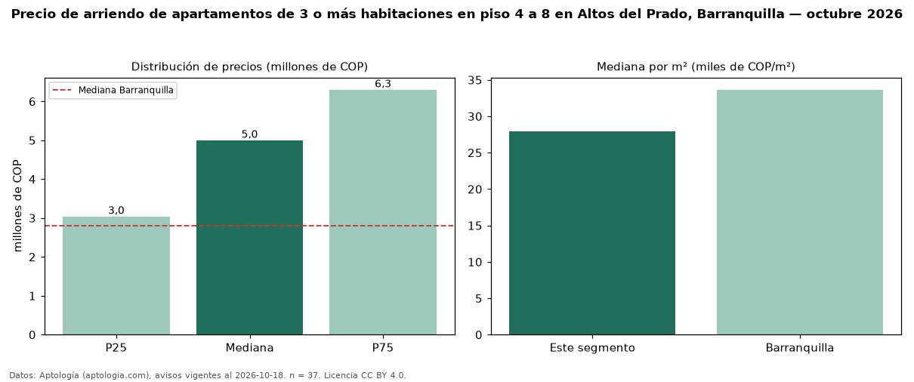

Precio de arriendo de apartamentos de 3 o más habitaciones en piso 4 a 8 en Altos del Prado, Barranquilla — octubre 2026
Con 37 avisos vigentes, el canon mediano de apartamentos de 3 o más habitaciones en piso 4 a 8 en arriendo en Altos del Prado, Barranquilla es COP 5,00 millones al mes. Prácticamente coincide con la mediana de los apartamentos de 3 o más habitaciones en arriendo de Altos del Prado (COP 5,00 millones, n = 129); este segmento reúne el 29 % de esos avisos. Por metro cuadrado, la mediana es COP 27.966/m² al mes (n = 35), 3 % por debajo de los apartamentos de 3 o más habitaciones en arriendo de Altos del Prado (COP 28.857/m²). El área mediana anunciada es 163 m². La mitad central de los avisos va de COP 3,04 millones a COP 6,30 millones (razón 2,1), una dispersión alta. El estrato más frecuente es 6 (51 % de los avisos con estrato). La mediana de todos los apartamentos en arriendo de Barranquilla es COP 2,80 millones (+79 % de diferencia). Datos: Aptología (aptologia.com), CC BY 4.0 — https://www.aptologia.com/arriendo/barranquilla/altos-del-prado. Archivos: PDF, CSV con las cifras y gráfica PNG.

| Avisos únicos | 37 |
|---|---|
| Percentil 25 | COP 3.043.000 |
| Mediana | COP 5.000.000 |
| Percentil 75 | COP 6.300.000 |
| Mediana por m² | COP 27.966 |
Fuente: avisos vigentes de portales inmobiliarios recopilados por Aptología, deduplicados (mínimo 30 avisos únicos por celda). Precios pedidos, no cerrados. Fecha: 2026-10-18.